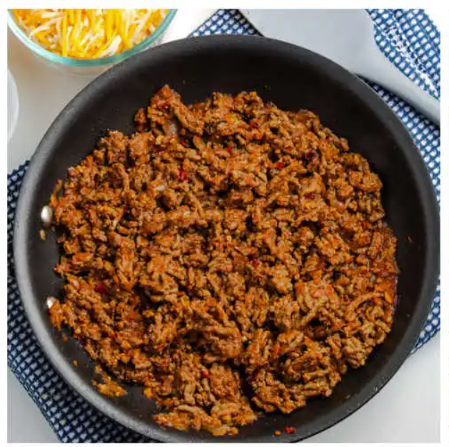

Recipes
Double Chocolate Cookies

My daughter learned to make these cookies at a baking camp at Zingermanns and has tweaked the recipe to fit the taste buds of her siblings. They are extremely sugary so the salt helps to balance it. Note, these cookies are best eaten very quickly.
Recipe Ingredients
- Unsalted butter
- Granulated Sugar
- Packed light or dark brown sugar
- Large egg
- Pure vanilla extract
- Semi-sweet chocolate chunks (melted)
- All-purpose flour
- Natural unsweetened cocoa powder
- Baking soda
- Salt
- Semi-sweet chocolate chunks
Recipe Steps
- In a mixing bowl cream together the butter, granulated sugar, and brown sugar
- Add the egg and vanilla extract and beat well
- Add the melted chocolate
- In a separate bowl combine the flour, baking soda, cocoa powder and salt
- Combine the wet and dry ingredients
- Add the unmelted chocolate chunks.
- Form 15 cookies and place on a baking sheet.
- Cook for 12 to 13 minutes at 350 degrees.
Additional Food images


Crunchwrap Supreme

MA plain cheese quesadilla of the white tortilla + prebagged cheese + microwave-until-melted variety can be made a bit of a joke when describing someone’s ability to “cook,” but this juicy chicken quesadilla is well-above basic.
Recipe Ingredients
- Tortilla
- Ground Beef
- Circular Taco Shell
- Cheese
- Lettuce
- Sour Cream
- Melted Cheese
- Diced Tomatoes
- Taco Bell Seasoning
- Cheese sauce
Recipe Steps
- Cook the beef on high heat while adding Taco Bell seasoning and let it simmer for 10 minutes on low
- Make the ground beef with taco seasoning, season it well with spices and Taco Bell spices from Target
- Lay the tortilla on the grill and put cheese sauce on top of it, smooth it out in a circular motion, and be generous with the amount
- Next, put the circular crunch taco shell on top of it while adding a generous amount of sour cream on it, don't be shy!
- Next add your seasoned to ground beef onto the tortilla
- Finally, add your diced tomatoes, lettuce, and cheese.
- Wrap your Crunchwrap pentagon style and then grill it on a hot pan for about 4 minutes on medium heat, both sides
Additional Food images


Shrimp Scampi

Shrimp scampi is a classic Italian-American delight, where succulent shrimp meet a medley of garlic, butter, and white wine. Sautéed to pink perfection, the shrimp mingle with a fragrant blend of garlic and red pepper flakes. A drizzle of white wine and a squeeze of lemon create a luxurious sauce, embracing the dish's linguine base. With a sprinkle of parsley, it's a harmonious, flavorful masterpiece that exemplifies both simplicity and taste.
Recipe Ingredients
- 2 tablespoons butter
- 2 tablespoons extra-virgin olive oil
- 4 garlic cloves, minced
- ½ cup dry white wine or broth
- ¾ teaspoon kosher salt, or to taste
- ⅛ teaspoon crushed red pepper flakes, or to taste
- Freshly ground black pepper
- 1¾ pounds large or extra-large shrimp, shelled
- ⅓ cup chopped parsley
- Freshly squeezed juice of half a lemon
- Cooked pasta or crusty bread
Recipe Steps
- In a large skillet, melt butter with olive oil. Add garlic and sauté until fragrant, about 1 minute. Add wine or broth, salt, red pepper flakes and plenty of black pepper and bring to a simmer. Let the wine reduce by half, about 2 minutes.
- Add shrimp and sauté until they just turn pink, 2 to 4 minutes depending upon their size. Stir in the parsley and lemon juice and serve over pasta or accompanied by crusty bread.
Additional Food images